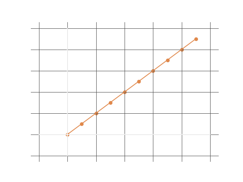
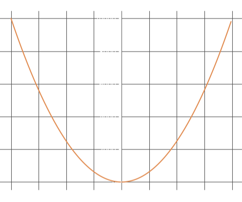

This section is meant to present a comprehensive overview of the application of functions and limits to produce what is commonly understood in calculus as the 'differential coefficent'. In one sense, this is a mathematical proof with a heavy theoretical basis in limits, and in the other can be thought of as a geometric reflection on rates-of-change and gradients, in relation to functions - linear, curved and otherwise. The dilemma in presenting this information is the necessity to conceptualize both of these ideas without taking the underlying theory of these individual concepts for granted. To avoid any issues, it is necessary to begin with an introduction into the conception of the infinitesimal and the nature of change on the infinitesimal scale.
Infinity
In the previous section on limits, the idea of approaching infinity was introduced. From this, it should be understood that some functions have limits that are theoretically expressed and understood, rather than algebraically defined.
In this section it is necessary to expand our theoretical conception of infinity. Instead of considering the limit of a function, or the approach to infinity, I want to consider change on the infinitesimal scale itself. In particular, I want to draw attention to the nature of this change, as it is of the utmost importance to calculus.
Imagine that I have some variable \(x\), and some variable \(y\). Consider that these two variables represent an arbitrary point on a cartesian plane. Now consider an infinitely small change in both of these variables represented by \(\delta x\) and \(\delta y\).
In what direction has this change taken place? Well, it would be difficult to say left or right, up or down etc. An infinitely small change is so minute, that we can essentially consider that we have not moved from the original point. Moreover, we can make another inference. Since the change is infinitely small, it would be impossible for there to exist a point in between our original position and our infinitesimal change. Hence, the change in position from \( \ \ (x, \ y) \ \ \) to \( \ \ ((x + \delta x), \ (y + \delta y)) \ \ \) would necessarily occur in a straight line. The consideration that this change will always occur in a straight line is extremely important. In mathematically expressing this change, we can also define an expression for the gradient of this line, as the change itself has already been defined. This is the foundation of calculus. The mathematical proof of the relationship between this infinitesimal change and the gradient of a straight line is given below.
In this section it is necessary to expand our theoretical conception of infinity. Instead of considering the limit of a function, or the approach to infinity, I want to consider change on the infinitesimal scale itself. In particular, I want to draw attention to the nature of this change, as it is of the utmost importance to calculus.
Imagine that I have some variable \(x\), and some variable \(y\). Consider that these two variables represent an arbitrary point on a cartesian plane. Now consider an infinitely small change in both of these variables represented by \(\delta x\) and \(\delta y\).
In what direction has this change taken place? Well, it would be difficult to say left or right, up or down etc. An infinitely small change is so minute, that we can essentially consider that we have not moved from the original point. Moreover, we can make another inference. Since the change is infinitely small, it would be impossible for there to exist a point in between our original position and our infinitesimal change. Hence, the change in position from \( \ \ (x, \ y) \ \ \) to \( \ \ ((x + \delta x), \ (y + \delta y)) \ \ \) would necessarily occur in a straight line. The consideration that this change will always occur in a straight line is extremely important. In mathematically expressing this change, we can also define an expression for the gradient of this line, as the change itself has already been defined. This is the foundation of calculus. The mathematical proof of the relationship between this infinitesimal change and the gradient of a straight line is given below.
Consider the graph on the right. As a straight line graph we know that it would be defined by some function of the form:
\[y = mx + c\]
We also know that the gradient of this line is the ratio of change in \(y\) and \(x\). Hence:
\[m = \frac{change \ in \ y}{change \ in \ x} \]
\[m = \frac{y_2 - y_1}{x_2 - x_1}\]
\[m = \frac{\delta y}{\delta x}\]

Taking our original function, \( \ y = mx + c \ \ \) we can define our gradient in terms of this infinitesimal change. This is illustrated below:
\[y = mx + c \ \ \ \ ---equation \ \ one\]
\[y + \delta y = m(x + \delta x) + c \ \ \ \ ---equation \ \ two\]
Hence,
\[mx + c + \delta y = mx + m\delta x + c\]
\[\delta y = mx + m\delta x\]
\[\frac{\delta y}{\delta x} = \frac{mx}{\delta x} + m\]
Recall, we are considering an infinitely \(small\) change represented by \(\delta x\) and \(\delta y\). Since \(\delta y\) represents change in the function itself, we need to consider change in \(\delta x\) - as this is the independent variable. This means that we need to consider the limits of this function as \(\delta x\) approaches 0.
\[\lim_{\delta x \to 0} \frac{\delta y}{\delta x} = m\]
If you have followed the theoretical explanation along with the math up to this point, it may seem a bit odd that we have represented the gradient in such a way. In fact, it may seem as though the changes on an infintesimal scale represents genuine quantifiable change, without consequence, - which it does. This is a bit difficult to conceptualize, and as such I would suggest that this change should be thought of in the light of natural law. It is complex enough that it cannot easily be understood or conceptualized, but indeed it does represent something fundamental and natural as it concerns the nature of change.
The Differential Coefficient
Of course, deriving the gradient of a straight line in such a way has little to no value. The practical value of this understanding comes when it is applied to higher order functions. This is another difficult idea to conceptualize. Do curved lines have a gradient? Yes, they do. Rather, the gradient of a curved line is constantly changing and is different from place to place - hence, it is represented by a function rather than a static value. In the same way that we have derived the gradient for the linear function based on an infinitesimal change, we can now derive a function for the gradient of a curved line.
Lets consider the curve defined by
\[y = x^2\]
Again lets take a point on this curve -
\[(x, \ y)\]
- and lets consider an infinitesimal change from this point represented by
\[(x + \delta x), \ (y + \delta y)\]
We understand theoretically from the nature of this change, that it is too small to be considered different from the position \((x, \ y)\), and it will necessarily occur in a straight line. Hence, if we find the gradient associated with this change, we will find the gradient of the curve at that point.

Consequently, it will also represent the gradient of a straight line that is tangential to the curve at that point. The mathematical proof of this is illustrated below:
\[y = x^2 \ \ \ \ --equation \ \ one\]
\[y + \delta y = (x + \delta x)^2 \ \ \ \ --equation \ \ two\]
Hence,
\[x^2 + \delta y = x^2 + 2x\delta x + (\delta x)^2 \]
\[\delta y = 2x\delta x + (\delta x)^2\]
\[\frac{\delta y}{\delta x} = 2x + \delta x\]
Recall, we are considering an infinitely \(small\) change represented by \(\delta x\) and \(\delta y\). Since \(\delta y\) represents change in the function itself, we need to consider change in \(\delta x\) - as this is the independent variable. This means that we need to consider the limits of this function as \(\delta x\) approaches 0.
\[\lim_{\delta x \to 0} \frac{\delta y}{\delta x} = 2x\]
Hence the function of the gradient for the curve \(y = x^2\) is given by:
\[m = 2x\]
We can use this to find the equation of a straight line that is tangential to the curve at any point that we define. Taking a point on the curve at \(x = 50\),
\[y = x^2 = (50)^2 = 2500\]
Hence we have the point on the curve:
\[(50, \ 2500)\]
The equation of a straight line through this point is given by
\[y = mx + c\]
and we know that \(m = 2x\), hence
\[y = 2x^2 + c\]
substituting our \(x\) and \(y\) values:
\[2500 = 2(50^2) + c\]
\[c = -2500\]
and
\[m = 2x = 2(50) = 100\]
hence the equation of a straight line that is tangential to the curve at the point \((50, \ 2500)\) is given by:
\[y = 100x - 2500\]
the graph below illustrates this tangent:

Returning to the problem at hand, we have derived a gradient function for our curve \(y = x^2\), using the limit:
\[\lim_{\delta x \to 0} \frac{\delta y}{\delta x} = 2x \]
Conventionally, the limit itself is given shorthand by:
\[\lim_{\delta x \to 0} \frac{\delta y}{\delta x} = \frac{dy}{dx} \]
And so we say,
\[\frac{dy}{dx} = 2x\]
This limit is called the differential coefficient of the function with respect to \(x\), the independent variable. Thus, when \(y = x^2\), \(\ \ 2x\) is the differential coefficient of \(y\) or \(x^2\) with respect to \(x\).